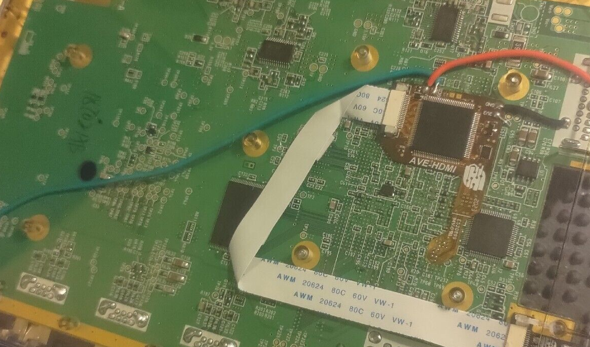

Though optical drive emulators existed that fit the GC and Wii over a decade ago, they are no longer obtainable. These were the WKF (Wii-Key Fusion) and Wasp Fusion (a functionally identical clone).
GCLoader was available for a short time and should be back soon; a new revision with obtainable parts is under development. These offer a few benefits over the old unobtainable ODEs, including larger SD card support. I can install these for you.
There are a few modchips available, most notably by webhdx. I can flash these and install them for $80. I have had to replace mainboards for customers in the past due to failed chip installations. If you damage the IC that you are soldering directly to the legs of, there is no replacement for it. Though this gets you running games off an SD card, it is not a drive replacement. The ports these use do not support the communication protocols natively, so the drawback is some in-game FMV (Full Motion Video) stutter. Otherwise, these are a great option for the price.
It should be noted that the PAL revisions of GC and PAL revisions of Wii offer RGB support natively. The Wii also offers component output without an expensive cable. The GameCubes, however, are known to output a superior analogue image if you want to spend the money.
If you want HDMI output (or RGB output from an NTSC system), The GCDual can be obtained from
or .
Installation of the GCDual is $129 + return post.
These run by Ingo Korb, which is an open-source FPGA/VHDL project and offers excellent image quality and tweaks like scanline emulation.
Gone are the days of chipping a Nintendo Wii. Back in the day, you'd install a WiiKey or similar to play backup games or use your Wii as a media center.
These days, you can simply softmod the system. Because a Wii is basically a 'souped-up' GameCube, you get full hardware compatibility with the GameCube library.
Just get the Wii with the GameCube ports!
In actual fact, there are a few apps that allow you to launch GC images off USB or SD card, but likely the most notable mention is 'nintendont'. You'll actually get
far higher framerates than when running the same game on an actual GameCube.
Softmods are $120 plus return post and include a 128GB SD card with handy tools and apps. The communication is fast enough via SD card that you won't have stuttering FMVs, though you
may choose to use an external Hard Drive via USB of up to 2TB, which comes in handy for those larger Wii images.
As mentioned above, the HDMI solutions for the system use GCVideo. If you search hard enough, you'll find a few products that never really reached a commercial release, such as
and
which started off as open source on a GitHub repository, and it seems to have matured into a commercial product, but it's only available in a bundle with installation overseas.

Installation of this kit is priced at $199 + return post.